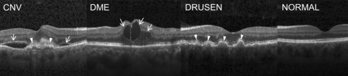
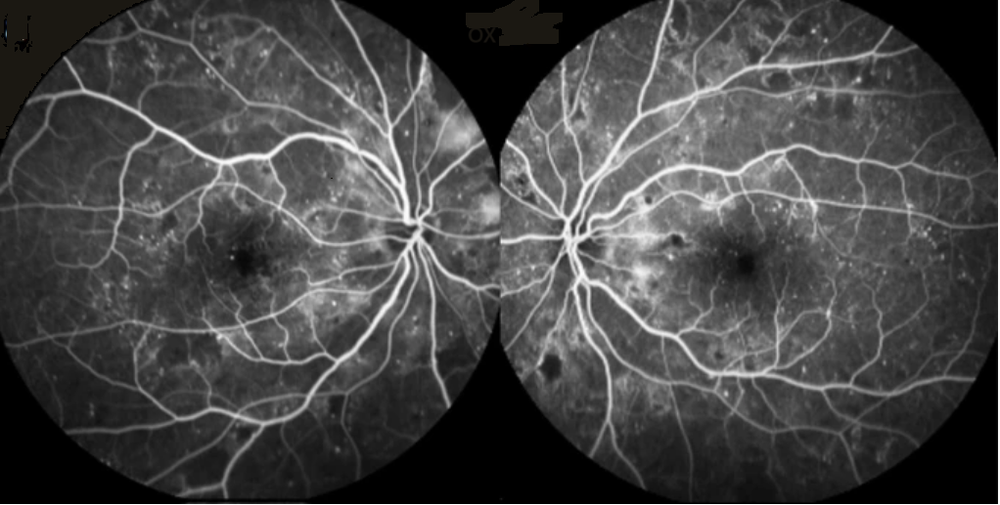

Retinopathy Detection using OCT Images
Here you can detect various retinopathy such as Choroidal Neovascularization(CNV), Diabetic Macular Edema (DME) and Age-related Macular Degeneration (AMD) by uploading OCT scans of the retina.

Retinopathy Detection using OCTA Images
You can upload OCTA scans and detect wheter or not you have become a victim to Diabetic Retinopathy which is one of the leading causes of vision loss in the world today.

Chatbot Support
You can ask any question to our bot and it will reply to you instantly within few minutes.

Just For Fun Section
While you are bored or want to just relax for a while you can visit this section and enjoy few games.